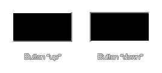

draw_button(x1, y1, x2, y2, up);
| Argumento | Descripción |
|---|---|
| x1 | La coordenada x de la izquierda del botón. |
| y1 | La coordenada y de la parte superior del botón. |
| x2 | La coordenada x de la derecha del botón. |
| y2 | La coordenada y de la parte inferior del botón. |
| up | Si el botón está arriba ( true ) o hacia abajo ( false ) |
Devoluciones: N / A
Esta función dibujará un "botón" rectangular muy simple usando el color de dibujo seleccionado actualmente y alfa donde el argumento hacia arriba define cómo se ve el efecto de borde biselado, como se muestra en la siguiente imagen: 
draw_button(100, 100, 200, 150, !mouse_check_button(mb_left));
Esto dibujará un botón que aparecerá presionado si se mantiene presionado el botón izquierdo del ratón.